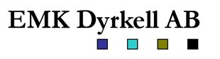
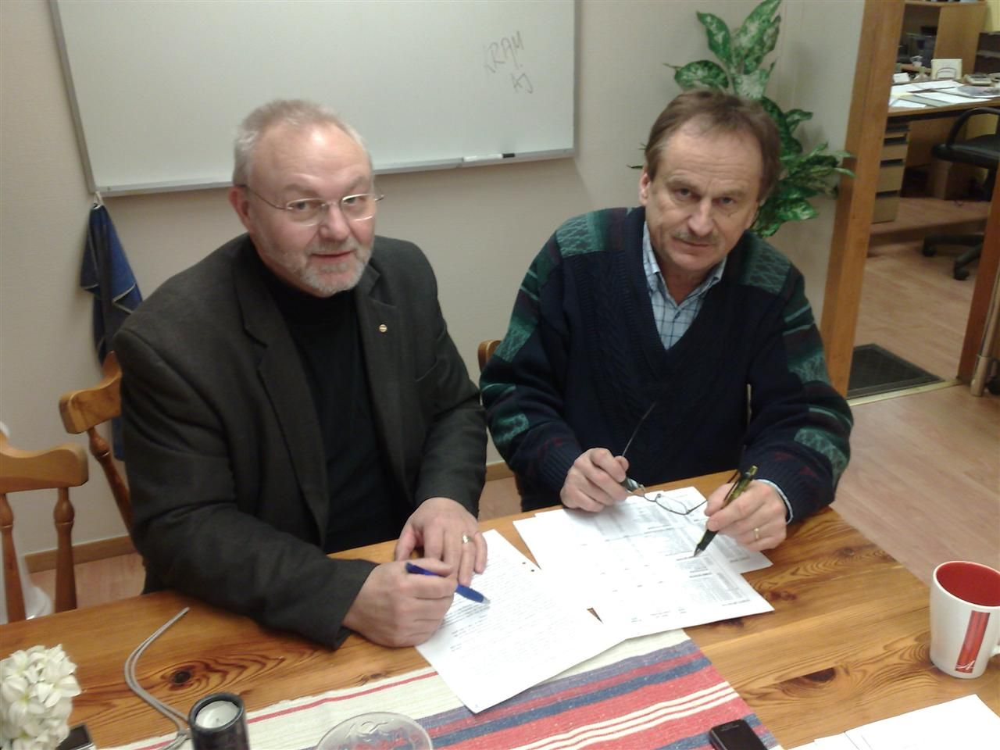
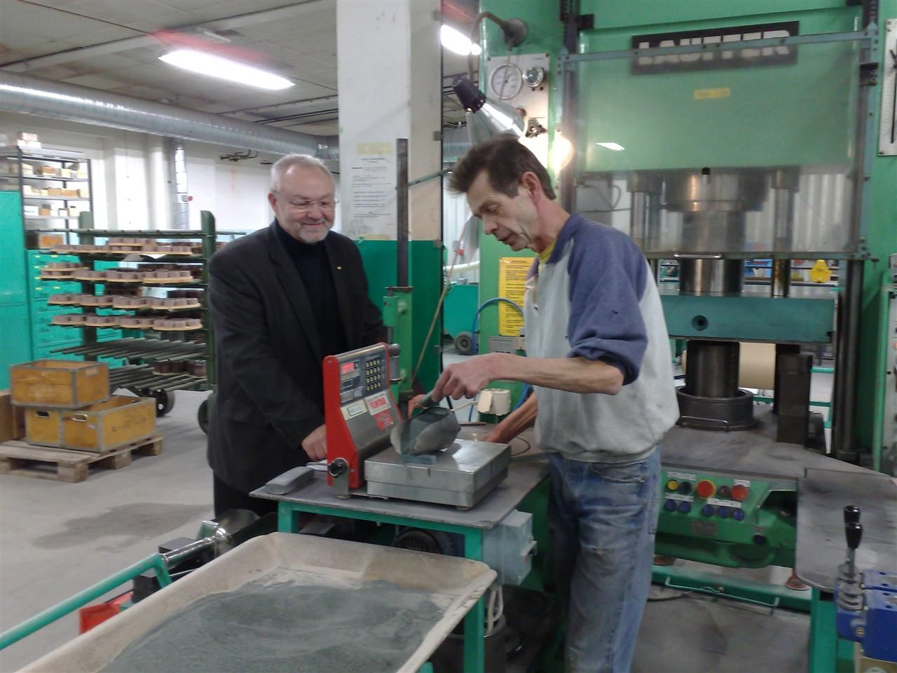
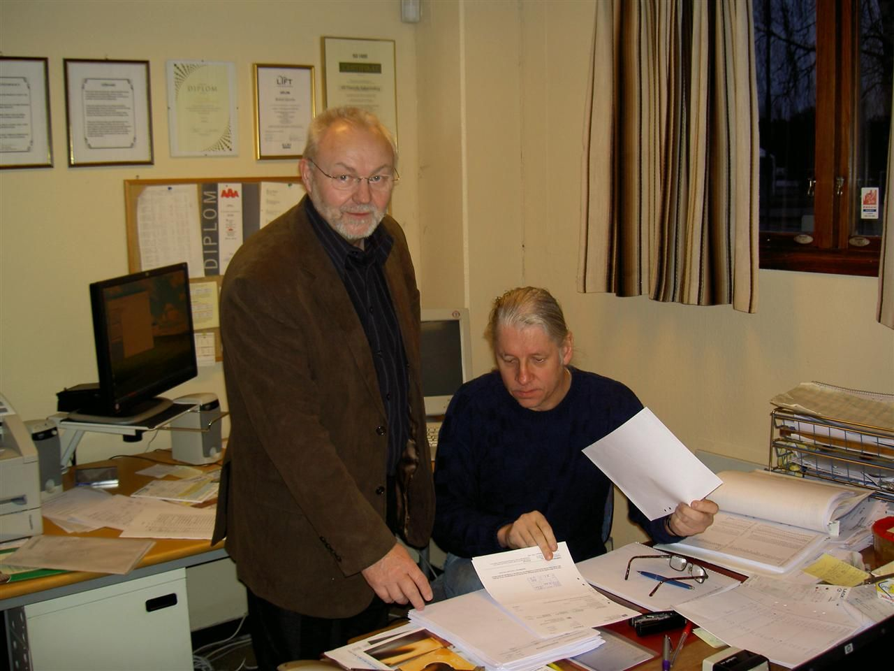
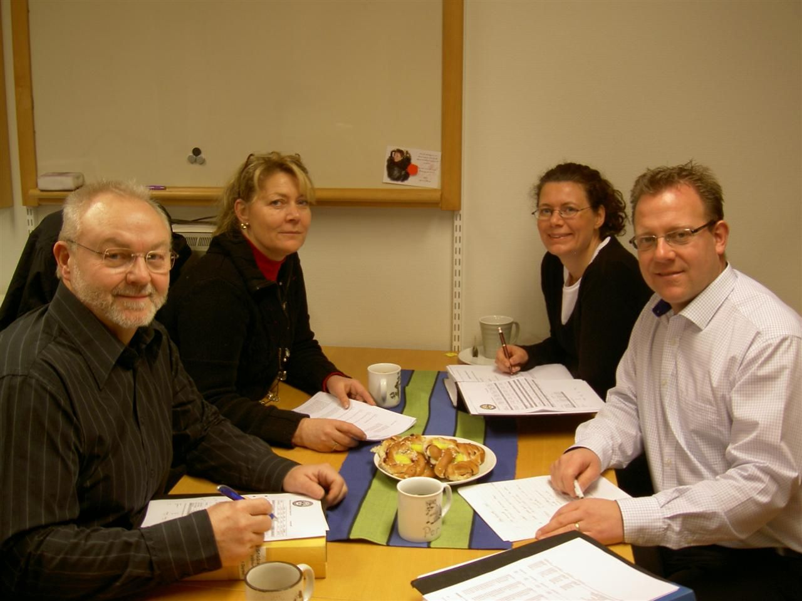

|  |  |
|
610 10 LJUSFALLSHAMMAR Kontinuerlig rådgivning till bolagsstyrelser och företagsledningar i mindre och medelstora företag. Ledning av strategiska utvecklingsprocesser inom företag. Kontaktperson: Hans Dyrkell, civilingenjör industriell ekonomi. Telefon: 0122-400 50 Mobiltel: 070-585 49 48 E-post: hans@dyrkell.com Uppdaterad: 2015-07-06 |

|